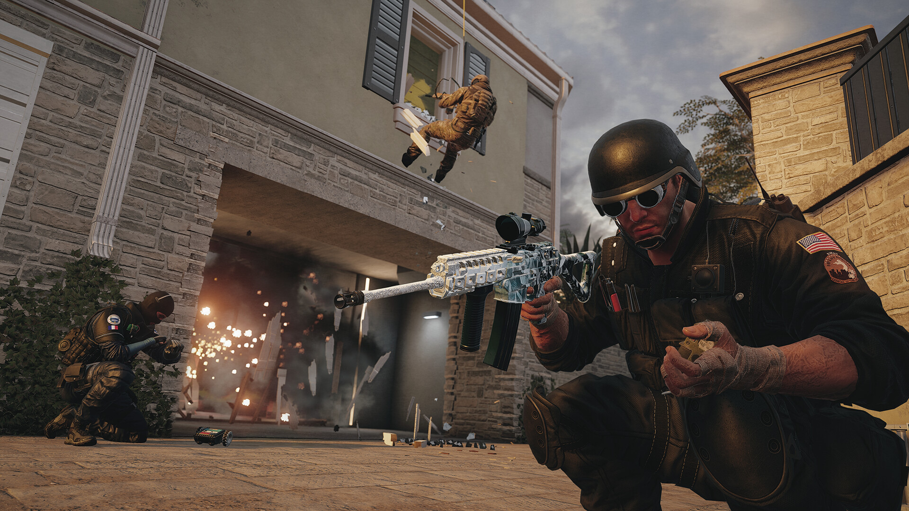

Choose Your Operator!
There are 72 playable operators, each with their own special and unique abilities. One operator is introduced each season (1 year has 4 seasons). So choose what you want to play based on your play style!
Roles
There are attacker and defender sides, each with different operators. Attack operators have abilities to aid their attack, and defender operators have abilities to help with defense.
On the attacker side, there are 3 main types of roles:
- Breacher: Breaks down floors and ceilings, and opens up walls.
- Entry: Has abilities to enter the site and secure the room more easily, and also has good guns.
- Supporter: Finds and eliminates enemy gadgets, and more.
- Denier: Denies attacks with traps, wires, and so on.
- Info: Gathers information on attackers with abilities like cameras or pulse scanners.
- Supporter: Directly helps the team with abilities like healing stations or armor packs.
About more?
If you want to know about this game more, below video includes basic information about how to play this game, including:
- What the game is
- What an operator is
- What the main goal is
- Maps
- And possibly more!